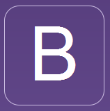

Box Game
Proyecto Programación 2
Rolando Espinoza Díaz
Theme:
Black (default) -
BOOTSTRAP -
White -
League -
Sky -
Beige -
Simple
Serif -
Blood -
Night -
Moon -
Solarized
Estructura de la presentación
- JSON
- BOOSTRAP
- ANGULARJS
- Que es
- Para que sirve
- Como se vé en código
- Que otras tecnologías se asemejan
- Qué evitar hacer
Estructura de cada elemento
BOOTSTRAP

http://www.getbootstrap.com/HISTORIA
Bootstrap fue creado por Mark Otto y Jacbod Thornton en el 2011 para mejorar las herramientas internas en Twitter¿QUE ES BOOSTRAP?
Bootstrap es un framework HTML, CSS y JavaScript que podemos utilizar como base para crear nuestros sitios o aplicaciones web.VENTAJAS
DESVENTAJAS
JSON
http://www.json.org/
Historia
Está basado en un subconjunto del Lenguaje de Programación JavaScript, Standard ECMA-262 3rd Edition - Diciembre 1999.¿QUE ES JSON?
JSON (JavaScript Object Notation) es un formato para el intercambios de datos, básicamente JSON describe los datos con una sintaxis dedicada que se usa para identificar y gestionar los datos. JSON nació como una alternativa a XML, el fácil uso en JavaScript ha generado un gran número de seguidores de esta alternativa. Una de las mayores ventajas que tiene el uso de JSON es que puede ser leído por cualquier lenguaje de programación. Por lo tanto, puede ser usado para el intercambio de información entre distintas tecnologías.VENTAJAS
• Formato sumamente simple • Velocidad de procesamiento alta • Archivos de menor tamañoDESVENTAJAS
• Tiene una estructura enredosa y difícil de interpretar a simple vistaINFORMACION ADICIONAL
Algunos editores de código como NetBeans, Dreamweaver, Textpad, etc. tienen incorporados plugins (o se les puede descargar) que nos ayudan a dar formato y validar nuestros objetos JSON, aunque si tienen prisa o no cuentan con ése tipo de herramientas pueden optar por soluciones en línea como JSONLint, un validador de JSON en línea que nos da formato y valida los objetos que ingresemos en su área de texto.AngularJS